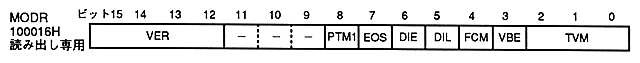

Since the registers at addresses 100000H to 10000CH are write-only, they cannot be read to check the set value. The set value of the write-only register can be checked with this register. It can be used mainly as help information during program development. However, this value is the system register setting value itself and may differ from the value captured as an internal signal depending on the timing of frame switching.